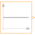

IntegerConstantGenerate constant signal of type Integer |

|
Information
This information is part of the Modelica Standard Library maintained by the Modelica Association.
The Integer output y is a constant signal:

Parameters (1)
| k |
Value: Type: Integer Description: Constant output value |
|---|
Connectors (1)
| y |
Type: IntegerOutput Description: Connector of Integer output signal |
|---|
Used in Examples (5)
|
Modelica.Blocks.Examples Demonstrates the usage of blocks from Modelica.Blocks.MathInteger |
|
|
Modelica.Blocks.Examples Demonstrates the usage of blocks from Modelica.Blocks.MathBoolean |
|
|
Modelica.Clocked.Examples.Elementary.IntegerSignals Example of a Sample block for Integer signals with direct feed-through in the continuous-time and the clocked partition |
|
|
Modelica.Clocked.Examples.Elementary.IntegerSignals Example of an AssignClock block for Integer signals |
|
|
Modelica.Clocked.Examples.Elementary.IntegerSignals Example of an AssignClockVectorized block for Integer signals |